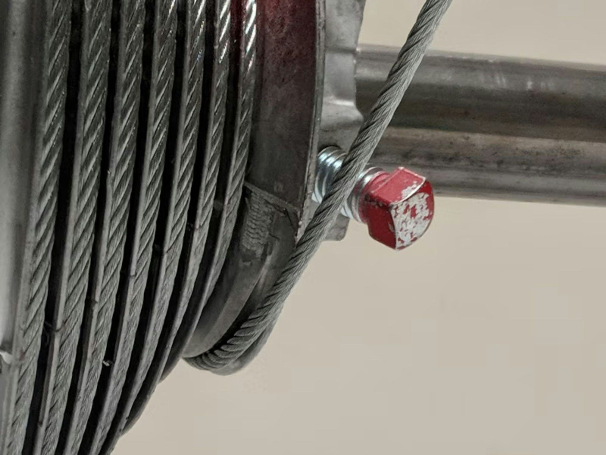
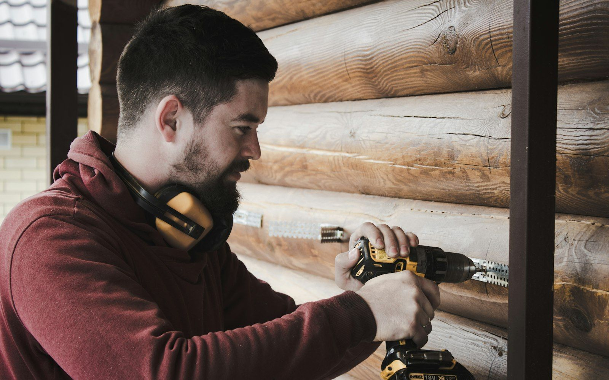
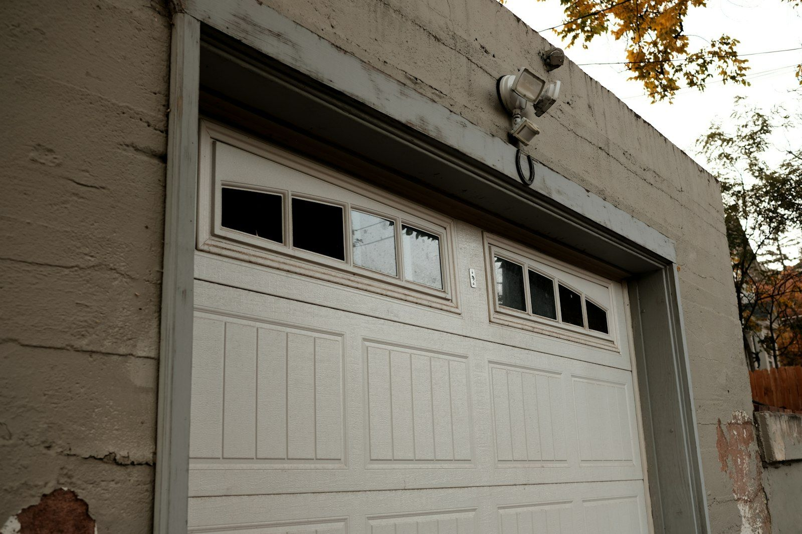
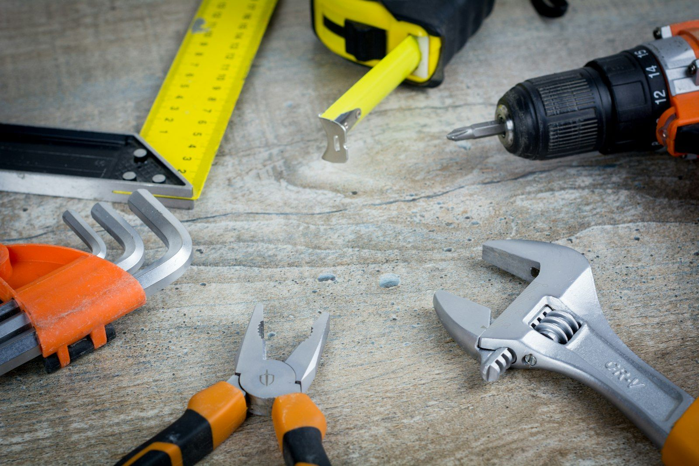
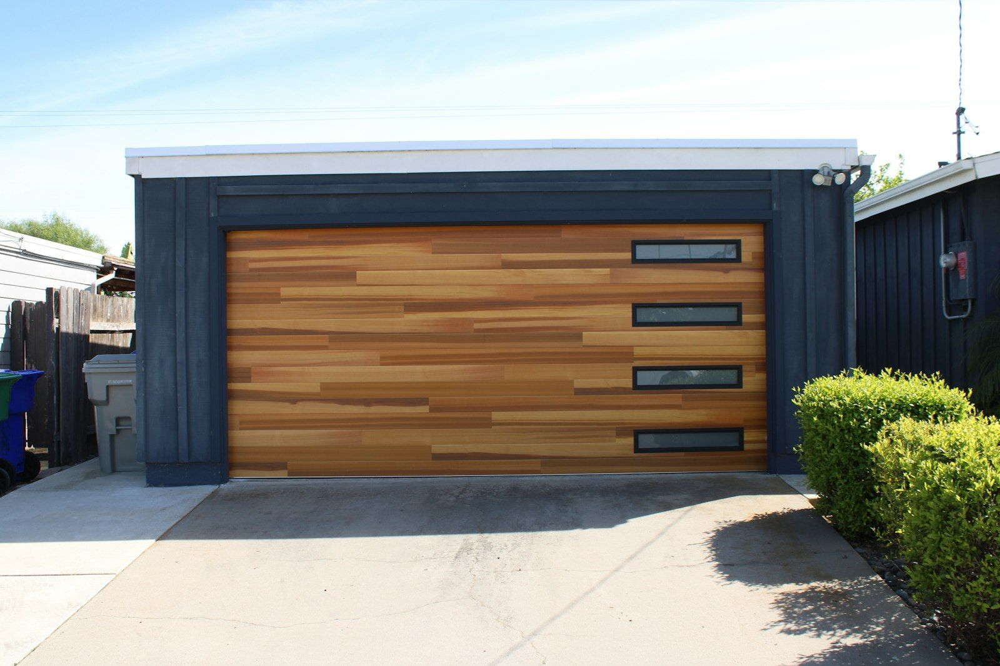

Garage Door Services
Everything your garage door needs, from a quick tune-up to a full replacement. Jump to a service below.
- Same-day service often available
- Trained local technicians
- Price before work starts
Broken Garage Door Spring Repair in Orlando & Tampa Bay
Heard a loud bang from the garage and now the door won't lift? That's almost always a broken spring. We replace it fast, often the same day.
Signs your garage door spring is broken
- You heard a loud bang from the garage
- The door feels extremely heavy or won't open more than a few inches
- You can see a gap in the coil above the door
- The opener runs but the door doesn't move, or it stops halfway
- The door slams down fast when closing
What we do
Most homes have torsion springs mounted above the door, while some older or lighter doors use extension springs along the sides. Our technician will identify your setup, replace the broken spring with one sized to your door's weight, and check the cables, drums and bearings while we're there.
When both springs are the same age, we'll usually recommend replacing them as a pair, since the second one tends to fail soon after the first. We'll explain your options and the price before any work starts.
Before we leave, we balance the door, lubricate the moving parts and test the opener's safety reverse so everything runs smoothly and safely.
Get a Free Quote
Garage Door Opener Repair & Replacement
Opener humming but not lifting? Door reversing for no reason? Remote stopped working? We repair and replace openers of most major brands.
Quick checks before you call
- Make sure the opener is plugged in and the outlet has power
- Replace the batteries in your remote
- Check that the "lock" button on the wall control isn't turned on
- Look at the two safety sensors near the floor. Their lights should be on and they should face each other with nothing in between.
Still not working? It's time for a technician.
Opener problems we fix
- Opener hums or clicks but the door doesn't move
- Door reverses before it closes all the way
- Stripped gears, broken belts or chains
- Misaligned or failed safety sensors
- Remotes and wall keypads that won't program or respond
- Old, loud openers that need to be replaced
If a repair makes sense, we'll fix it. If your opener is old and failing, we'll show you replacement options, including quiet belt-drive and smart Wi-Fi openers you can control from your phone.

Garage Door Off Track & Broken Cable Repair
A door hanging crooked or off its track is dangerous. Stop using it, keep people and pets clear, and call us. We'll get it back on track safely.
Common causes
- A lift cable frayed or snapped
- The door was hit by a car
- Worn or broken rollers popped out of the track
- Bent or loose tracks
- A broken spring caused the door to drop unevenly
How we fix it
Our technician secures the door first, then replaces any damaged cables, rollers or brackets, straightens or replaces bent track sections, and resets the door so it travels smoothly and evenly.
We finish by balancing the door and testing the opener and its safety reverse. You get $100 off any repair.
Get a Free Quote
$69 Garage Door Tune-Up
Noisy, slow or jerky door? Our $69 tune-up catches small problems before they turn into expensive repairs.
What's included
- Full safety inspection of the door and opener
- Spring and cable check
- Lubrication of hinges, rollers, bearings and springs
- Tightening of bolts, brackets and hardware
- Door balance check
- Safety-reverse and sensor test
Why a tune-up is worth it
Your garage door is the largest moving part of your home, and it opens and closes thousands of times a year. Florida heat and humidity are hard on springs, rollers and hardware. A yearly tune-up keeps the door quiet, extends the life of the springs and opener, and lets us spot worn parts before they fail.
If we find anything that needs repair, we'll show you and give you the price first. Nothing extra is done without your OK, and you still get $100 off any repair.
Get a Free Quote
New Garage Door Installation in Orlando & Tampa Bay
A new garage door can transform the look of your home and fix recurring problems for good. Get $500 off a brand-new door.
Styles we install
- Steel doors: durable and low-maintenance, in many colors and panel styles
- Insulated doors: quieter, sturdier and better at keeping Florida heat out of the garage
- Carriage-house styles: classic look with modern materials
- Doors with windows: let natural light into the garage
Built for Florida
Garage doors in Florida need to be rated for local wind requirements. We'll help you choose a door that fits your home, your budget and local code, and we'll handle the removal and haul-away of your old door.
How it works
We come out, measure, and walk you through styles and options. Once you pick a door, we schedule the install. Most installs are done in a single visit, including a new opener if you want one.
Get a Free Quote
Service questions
Quick answers about repairs, tune-ups and new doors.
How long does a spring replacement take?
Most spring replacements are done in about an hour once the technician arrives.
Can I open the door with a broken spring?
We don't recommend it. Without the spring, the door is extremely heavy and can fall. If your car is stuck inside, call us and we'll walk you through your options.
Do you offer a discount?
Yes. You get $100 off any garage door repair, including spring replacement.
Should I repair or replace my opener?
If the opener is fairly new, a repair is usually the better value. If it's old, very loud, or the motor is failing, a replacement often costs less in the long run. We'll give you both options.
Can you install a smart opener?
Yes. We can install Wi-Fi openers that let you open, close and check your door from your phone.
Do you program remotes and keypads?
Yes, we can program new remotes and wall keypads during the visit.
Is a door off track an emergency?
It can be. A door off track can fall. Keep everyone away from it and call us. Same-day service is often available.
Can you fix a door that was hit by a car?
Often, yes. Depending on the damage we can replace tracks, rollers or individual panels. If the door is badly damaged, we'll show you replacement options with $500 off a new door.
How often should I get a tune-up?
Once a year is a good rule, or right away if your door gets noisy, slow or jerky.
How long does it take?
About 45 minutes to an hour for most doors.
How much does a new garage door cost?
It depends on the size, style and insulation you choose. We'll give you a clear quote after measuring, and you get $500 off.
Do you remove the old door?
Yes, removal and haul-away of your old door is part of the install.
Get a Free Quote
Tell us what's wrong. We'll call you back in minutes.